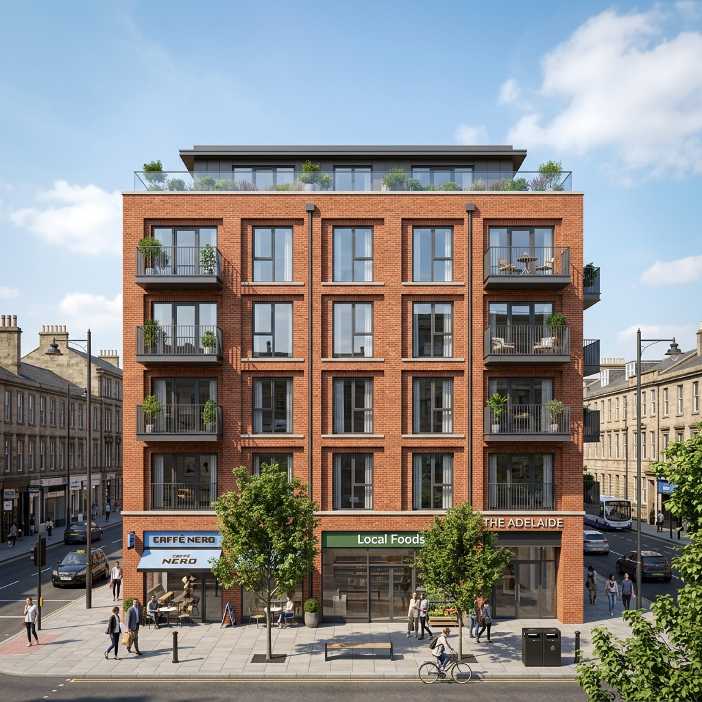

Rendair AI has spent most of 2026 quietly fighting the same SEO battle as every AI rendering tool, top-of-funnel content keyed to "best AI tools for architects" and "AI architectural rendering software." This week the angle shifted. A new piece on the Rendair blog frames the tool as a BIM companion, lining itself up alongside Revit, Archicad, and Vectorworks rather than against Veras and Midjourney.
That's a deliberate move. BIM is where the firm-budget money lives. Plugins inside Revit and Archicad get bought on multi-seat licenses and renewed annually. Concept renders sold to a sole practitioner on a credit-card subscription is a different business. Rendair is signaling that it wants the firm-budget seat.
So we tested the claim. We took a mixed-use SD-phase project we are running in Revit and a residential addition currently in Archicad, and we ran both through Rendair's current 2026 workflow alongside our normal Veras-and-Enscape pipeline. Here is what actually happened.
Rendair AI's web app accepts PNG and JPG exports from any BIM tool. The "BIM friendliness" claim is real but specific: the engine handles clean orthographic and perspective exports better than freeform AI tools. There is no native Revit or Archicad plugin yet. For interior renders on BIM-sourced views, it is genuinely competitive. For exteriors, Veras still has the edge.
What "BIM-friendly" actually means here
Let's strip the marketing first. Rendair AI does not have a Revit plugin. There is no "Render in Rendair" button inside Archicad. The workflow is: export a view from your BIM software as a PNG or JPG, drag it into Rendair's web app, choose a style, generate.
That is not BIM integration. It is BIM-compatible.
The real BIM-friendliness, as far as we can tell, is two things. First, the engine respects geometry from clean BIM exports better than it does freehand sketches, Rendair has clearly trained on architectural orthographic and perspective views. Second, the web-based workflow means you can stand on top of any BIM tool: Revit, Archicad, Vectorworks, Allplan, BricsCAD. That matters for studios that run mixed software stacks. Veras and Enscape are great if you live inside the Chaos ecosystem; Rendair is the answer if you don't.
Rendair is BIM-friendly the way an electric kettle is gas-stove-friendly. It works with anyone's setup. That's a real virtue for studios with mixed software, but it's not what the marketing language implies.
The Revit test
Our mixed-use scheme is being modeled in Revit 2026 with a moderately complex curtain wall on the north elevation, brick podium, and exposed concrete soffits. We exported a perspective view as PNG at 4096px and ran it through Rendair using a "warm dusk, photographic, urban context" style prompt.
First pass: 38 seconds to generate. Geometry held cleanly on the brick podium and the curtain wall mullions. The exposed concrete soffit read as concrete, not as polished plaster, which is a frequent failure mode in less geometry-aware AI tools. Soft shadows under the canopy were physically credible.
The miss: a second-floor balcony rail in our model came back as a glass panel guard rather than the metal picket rail we had drawn. This is a recurring AI rendering failure, narrow, repetitive metal elements get smoothed into glass or solid surfaces. Rendair did not solve it. Veras 4.3 also doesn't fully solve it, but the failure rate is slightly lower in our experience there.
The Archicad test
Archicad exports came in cleaner than Revit exports because the GDL-generated geometry has slightly less visual noise in raw views. Rendair handled the residential addition, timber rainscreen, slate roof, dormer detail, well. The dormer detail in particular held shape, where most AI tools either flatten it or hallucinate it into a different roof form.
The interior pass on the same project was the most impressive output we generated all week. We exported a perspective of the open kitchen-living space, fed it to Rendair with a "natural daylight, oak flooring, soft afternoon" prompt, and got back a render that we would have shown a client unedited. Furniture proportions held. The light direction was correct relative to the window placement in the model. Material reads were clean.
That interior result is consistent with our earlier head-to-head between Rendair and Veras 4.0, where Rendair won the interior category. With Veras 4.3 and Nano Banana 2 closing that gap, the comparison is now closer than it was, but Rendair still feels slightly more confident on residential interior moods.
Where the BIM pitch doesn't hold
If you read Rendair's recent blog post, you'd think the tool is a Revit-or-Archicad-native renderer with deep BIM awareness. It is not. There are workflow gaps that matter for serious BIM users.
No view-from-BIM round trip
You cannot send a Rendair output back into Revit or Archicad as a textured material, a placed image, or a 3D-aware overlay. The output is a flat PNG. For renders sold as deliverables to a client, that's fine. For workflows where you want to iterate on the model and re-render the same view at a known camera position with consistent material direction, you're rebuilding the prompt every time.
Veras has this advantage when used inside its plugins. It knows the camera. It can re-render a view consistently from one design iteration to the next. Rendair, being external, cannot.
No batch processing
If you have ten exterior views to deliver, you upload them one at a time, prompt them one at a time, wait for each one to finish before queuing the next. For a deliverable package, that's an hour or more of supervised work. Veras does not have batch either, but the in-plugin workflow makes the per-view friction lower.
No drawing-aware features
Rendair does not parse your BIM model. It cannot pull material assignments from your project. It cannot tell that the wall labeled "Wall_External_Brick_010" is supposed to be brick rather than concrete. The render is a per-image style transfer, not a model-aware visualization. That's standard for AI rendering tools, but it's worth being clear that "BIM-friendly" doesn't mean "model-aware."
Rendair vs Veras 4.3 vs Enscape AI for BIM users
| Capability | Rendair AI | Veras 4.3 | Enscape AI |
|---|---|---|---|
| Native Revit plugin | No | Yes | Yes |
| Native Archicad plugin | No | Yes | No |
| Web-based workflow | Yes, multi-BIM compatible | Plugin-only | Plugin-only |
| Camera-consistent re-render | No | Yes | Yes |
| Interior render quality | Strong on residential mood | Improved in 4.3, competitive | Adequate, less stylized |
| Exterior render quality | Solid, occasional rail/picket smoothing | Best in category | Adequate |
| Pricing | ~$19/mo individual | Bundled with V-Ray (~$80/mo) | Bundled with Enscape sub |
Who Rendair is actually for
The clearest fit, after spending the week on this:
- Archicad-only studios. If you don't have a V-Ray subscription, Veras's standalone tier is decent but Rendair at $19/mo is genuinely cheaper for similar interior output. The lack of plugin matters less here because Archicad's BIMx and built-in renderer already handle the basics.
- Vectorworks, Allplan, BricsCAD users. Rendair is essentially the only practical AI render path for these tools that doesn't involve hand-routing through SketchUp. The web-based workflow is its real BIM advantage, even if Rendair won't say that directly.
- Solo practitioners and small studios on residential work. The interior strength plus the price point make Rendair an easy add to a residential workflow. We'd recommend it without reservation for that use case.
- Anyone serving up presentation renders to a non-architect client. The mood quality is high enough that Rendair outputs land well in client meetings, and clients don't care whether the render came from a plugin or a web app.
Who should still skip it
Skip Rendair if you are deep in the Chaos ecosystem already. If you have V-Ray and Enscape running on commercial projects, the in-plugin workflow advantage of Veras 4.3 outweighs Rendair's interior edge. The cost of context-switching to a web app for every render adds up faster than people expect on a 30-view deliverable.
Skip Rendair if your firm needs camera-consistent renders across design iterations. The lack of model awareness means every iteration is a fresh prompt, which is fine for one-offs but painful for projects where the same view will be re-rendered five or ten times as the design evolves.
The strategic read
Rendair publishing its own "Top 5 AI Tools for BIM Architects" piece is content marketing dressed as objectivity. It's also a useful tell about where Rendair thinks its growth is. The market for "AI rendering for architects" is now crowded enough that horizontal positioning gets you nowhere. Vertical positioning, "the BIM-friendly renderer", is how you carve a defensible audience.
Whether the BIM pitch matures into something more substantive depends on whether Rendair ships actual plugin integration in 2026. A native Archicad plugin would be the obvious move and would put real pressure on Veras's Archicad position. A Vectorworks plugin would essentially own that segment. If neither ships in the next two quarters, the BIM positioning will start to feel hollow, clean exports are not integration, and the market eventually figures that out.
For now, if you fit one of the user profiles above, Rendair is a real, useful tool. Just buy it for what it is, a competent, BIM-export-friendly web renderer with strong residential interior output, not for what the blog post implies it is.
Tested by Vista Studios on a live Revit 2026 mixed-use project and an Archicad residential addition. No affiliate relationship with Rendair AI. Outputs generated from production BIM model exports.